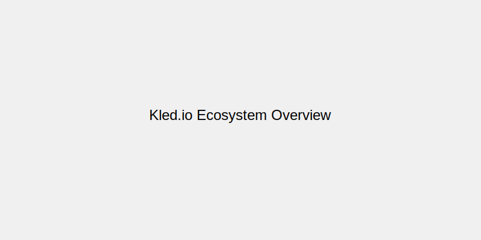

Welcome to Kled.io
The Kled.io Ecosystem provides a comprehensive platform for enterprise AI/ML deployment and management. By leveraging the power of Kled Clusters, the pure Rust communication layer, and the Flutter UI ecosystem, Kled.io enables enterprises to deploy and manage AI/ML workloads with unprecedented efficiency, security, and scalability.
Company Goals
At Kled.io, we're committed to revolutionizing how enterprises deploy and manage AI/ML workloads. Our goals include:
- Enabling end-to-end adoption of AI/ML into business operations
- Creating secure, isolated environments for running AI/ML workloads
- Providing cross-platform tools for managing workspaces and clusters
- Supporting enterprise-grade security and compliance requirements
- Reducing operational complexity and cost through efficient resource utilization
Strategic Vision
Our strategic vision is to create an environment where enterprises can deploy AI and ML to the highest capacity without needing to perform a full architecture overhaul. We believe in:
- Data Sovereignty: Enterprises retain their data on their own servers and in their own cloud
- Operational Efficiency: Reduce operational complexity and cost through efficient resource utilization
- Security by Design: Build security into every layer of the stack
- Cross-Platform Accessibility: Provide tools that work across web, mobile, and desktop
- Open Standards: Embrace and extend open standards for maximum compatibility
Key Differentiators
The Kled.io Ecosystem stands apart from other solutions through our unique approach:
Kled Clusters
Fully operable Kubernetes clusters running inside Physical Clusters, providing resource efficiency, strong isolation, and seamless scaling.
Advanced Workspace Technology
Custom preload image with full language support, dockerized monorepo support, and workspace agents for lifecycle management.
Pure Rust Communication
High-performance, secure communication layer built entirely in Rust, providing strong type safety and memory safety guarantees.
Flutter UI
Cross-platform user interface for managing workspaces, Kled Clusters, and AI/ML workloads from any device.
Hashicorp Integration
Comprehensive integration with the Hashicorp Cloud Platform, including Terraform, Vault, Consul, and more.
Mobile Support
Native support for mobile platforms through Flutter, enabling management of workspaces and clusters from anywhere.
Key Technologies
The Kled.io Ecosystem is built on a foundation of modern, high-performance technologies:
Languages
Rust
Core backend
Go
CLI & Kubernetes
Dart
Flutter UI
TypeScript
Web frontend
Frameworks & Libraries
Flutter
UI framework
Cobra
CLI framework
Kubernetes
Container orchestration
Tauri
Desktop apps
Tokio
Async runtime
Turborepo
Monorepo management
Docker
Containerization
Terraform
Infrastructure as code
Hashicorp Suite
Vault
Secrets management
Consul
Service discovery
Waypoint
Deployment
Packer
Image building
Vagrant
Development environments
Technology Philosophy
Our technology choices are guided by a commitment to performance, security, and developer experience. We believe in:
- Performance-First Design: Using high-performance languages and frameworks
- Type Safety: Leveraging strong type systems to prevent errors
- Memory Safety: Using memory-safe languages to prevent security vulnerabilities
- Cross-Platform: Building tools that work across different platforms
- Developer Experience: Creating tools that are easy to use and understand
Documentation Sections
Architecture
Detailed information about the architecture of the Kled.io Ecosystem.
Technical Components
In-depth documentation of the key technical components of the Kled.io Ecosystem.
Enterprise AI/ML
Information about how the Kled.io Ecosystem supports enterprise AI/ML deployments.
Roadmap
The future plans for the Kled.io Ecosystem.